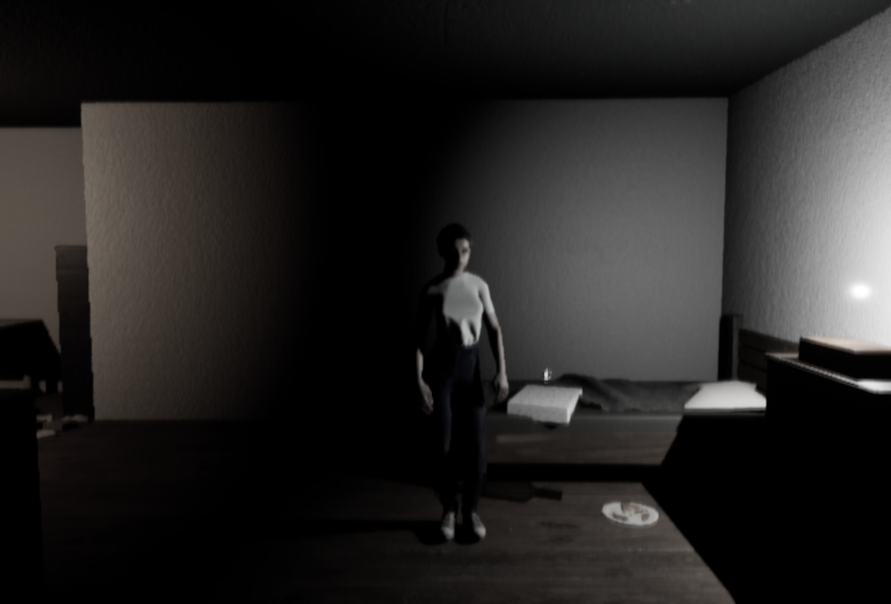
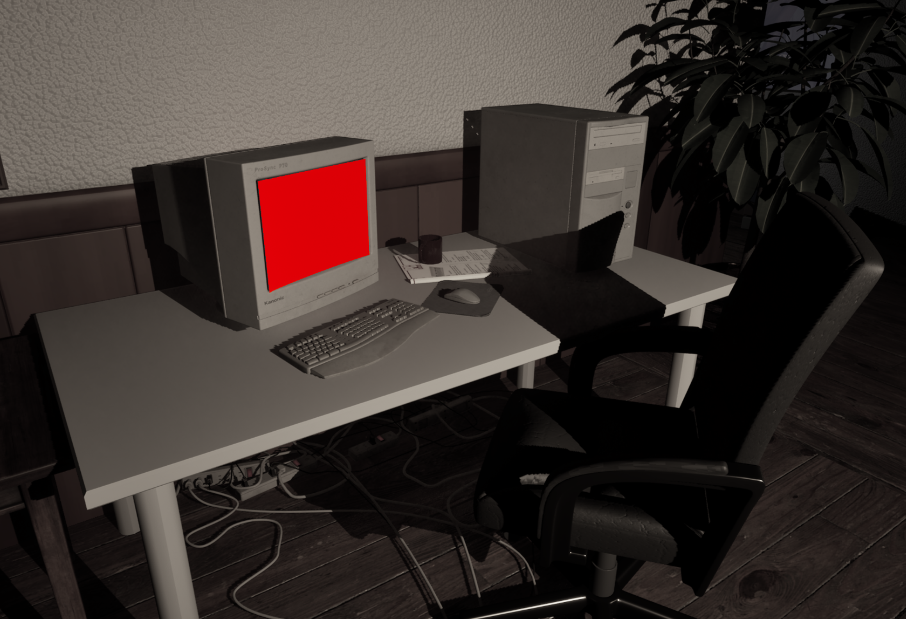
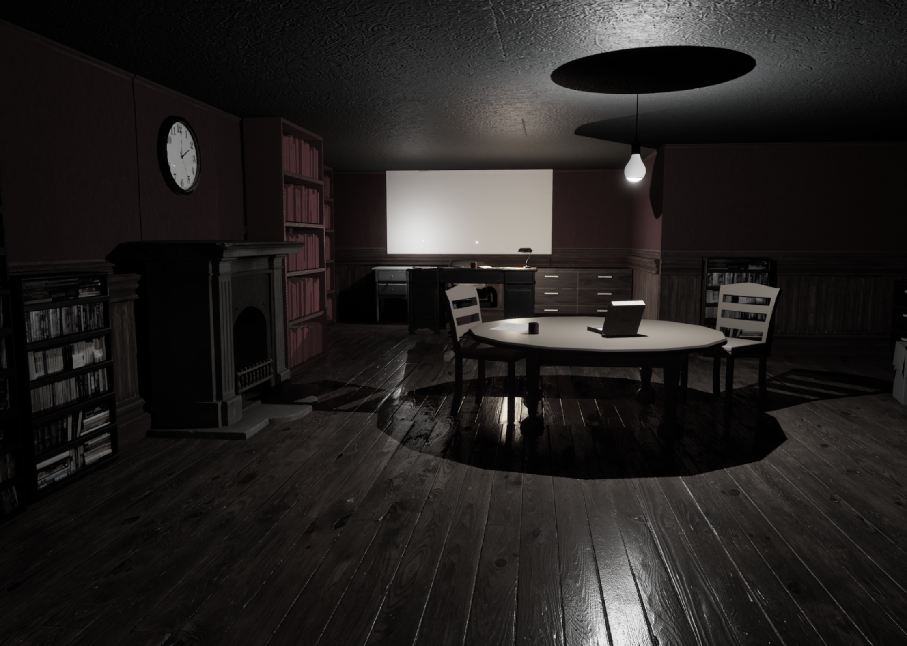
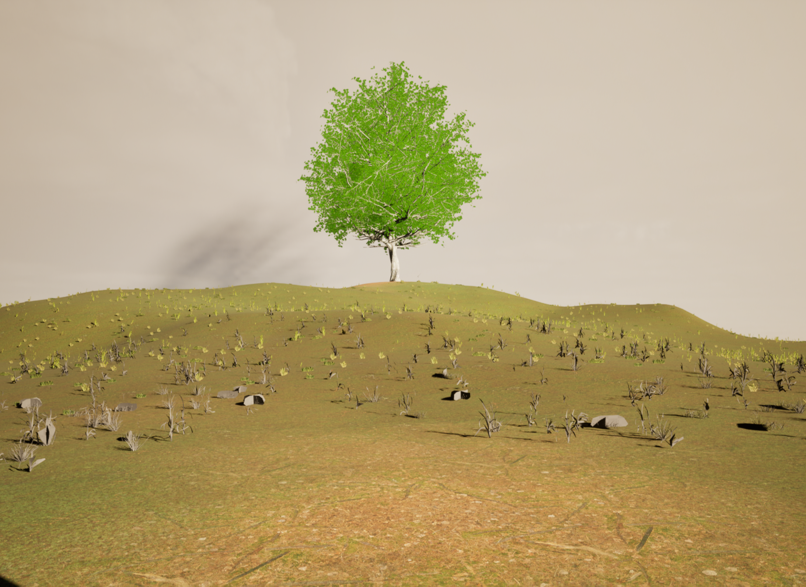
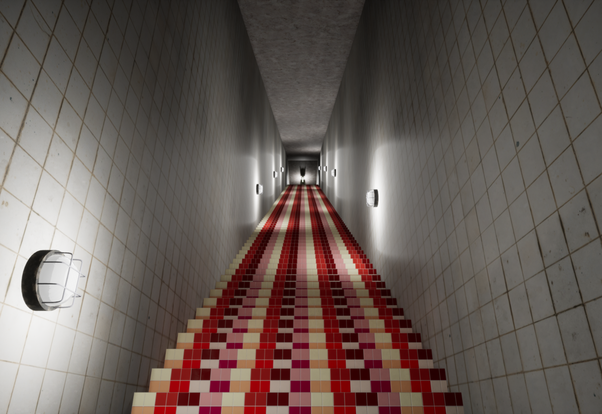
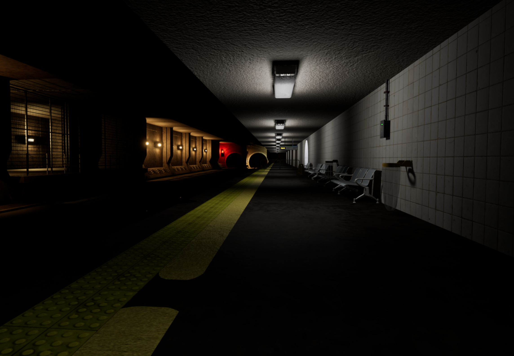
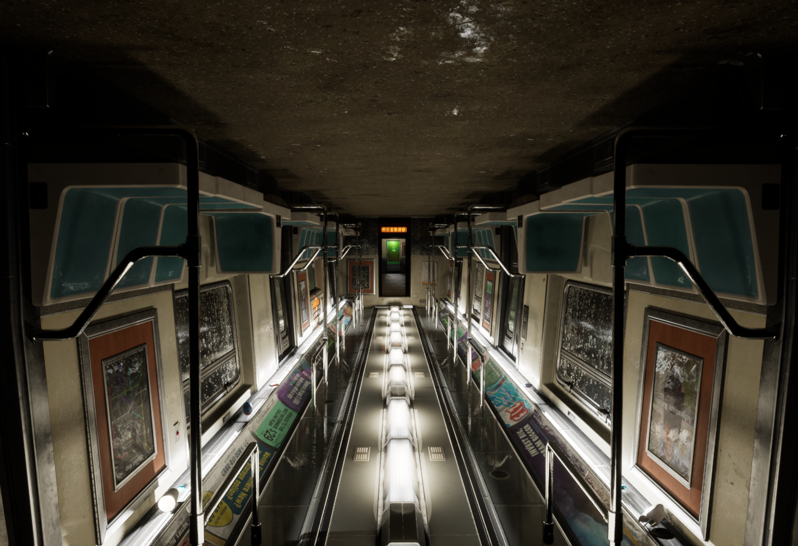

Are you sure that's you in the mirror? The Me in the Mirror is an intense and uncomfortable psychological horror walking simulator placing players in the shoes of Daisy whilst she suffers from depersonalization-derealization disorder and attempts to recover from an abusive relationship.
Players will follow Daisy as she attempts to go through her daily routine split between the 4 levels, getting ready for work, travelling to work, working in an office and travelling back home as reality slowly crumbles around her. Haunted by her past abusive relationship and the DPDR it left her with gives Daisy and by extension the player no choice but to confront this deep-rooted trauma and her loosening tether on reality and her own self-perception.
A full walkthrough of the Me in the Mirror, I was responsible for the first level of the game

An image showing the mirror in the players room, this is the first thing they see upon starting level 1

An image of the computer in Daisy's room, notice the washed out filter that ignores the colour red which was programmed by a game development student that helped us throughout

An image showing the study room found in the upstairs of Daisy's house

An image of the dream world landscape that players are transported to halfway through the first level

An image of a foreboding staircase found in level four

An image of the subway platform found in level four

An image of the upside down train carriage players are chased through in level four
An image of the Me in the Mirror logo we use on the games itch page and within the game design documentation
My Responsibilities
Alongside another designer, we were responsible for designing every aspect of the project together
- Responsible for ideating, designing, blocking out and filling level 1 with environmental art
- Responsible for programming major game systems like player and environment interactions, scripted level sequences and scripted enemy behaviour
- Responsible for managing/producing the project using Jira
- Alongside another designer, we were responsible for writing and organising the game design documentation which can be opened via the link to the right
- Alongside the entire team, we were responsible for performing a postmortem analysis of the project and presenting that to key lecturers
- Responsible for holding team meetings and ensuring the team is on the same page in regards to the game vision and its narrative
Biggest Challenge
Overworld Flipping:
Underworld Flipping:
The biggest challenge I faced was figuring out the logic behind flipping both the normal and underworld of my level (the house).
Due to this project being a designer only group task I had a lot of difficulty figuring out from a code POV how to get this level
flipping system to work.
Initially I tried rotating a parent object of the level within one of Unreal’s blueprints however I found that this did not
create the desired effect and would cause the level to rotate but shift far away in the scene, leaving a hole into the void
and preventing players from going further.
I then attempted to use Unreal’s level instances feature however due to my limited knowledge of Unreal I found that this
system was even more difficult to control and caused a lot of logic based confusion with the wrong level spawning at the wrong time
In the end I figured out how I could create the level flipping system. I instead created a blockout of the level/area I wanted to
flip, duplicated this blockout and placed it under a parent object. When the player presses a button in the world this would check
what flipped level parent is spawned in and despawn it, simultaneously spawning in the other level. The video above showcases this
system.
Whilst this is an issue programmers would likely deal with I believe it improved my understanding of Unreal and its blueprint
system through the ambitious nature of the level design whilst also making for a more engaging puzzle in the final release.
Contact Me
I would love to chat! Feel free to contact me using the information below